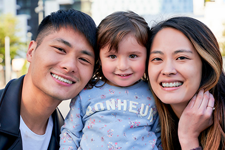
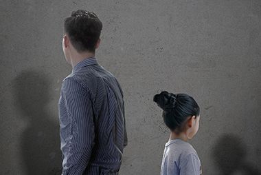

-
 1회기
1회기
나와 자녀의
관계 이해하기 -
 2회기
2회기
나와 자녀의
관계 증진하기(1) -
 3회기
3회기
나와 자녀의
관계 증진하기(2) -
 4회기
4회기
부모로서의
자신 모습찾기
- 시작하기
- 첫째,
나의
장점발견 - 둘째,
극복경험
나누기 - 셋째,
다문화가정
이중언어 - 넷째,
희망메시지
보내기 - 정리하기
가족생활 극복경험 나누기
가족, 사회 안에서 적응
사례 #01"언어 때문에 대화가 힘들어요."
남편(혹은 아내)과 말이 안통하고 한국말이 서툴러서 맨날 싸웠어요.
나의 극복경험
우리집에 일주일에 두 번씩 와서 한국말 가르쳐주는 선생님이 있어요. 한국말도 가르쳐주고 상담도 해주고 그래서 많이 의지가 되었어요.
아이가 태어나고 아이와 얘기를 하고싶어서 한국말을 꼭 배워야 하겠더라구요. 그래서 온라인학습으로 열심히 했었어요.
가족, 사회 안에서 적응
사례 #02"외국인 남편 가정이라고 편견이 많아요."

저는 동남아 지역 출신 남편과 함께 사는 부부입니다.
동남아인 남편과 산다고 주위에서 수근거리는 소리가 많고
교육이나 취업알선 같은 지원이 외국인 여성 중심으로 되어 있어서 남편의 한국 정착이 쉽지 않아요.
나의 극복경험
내 마음이 먼저 편해져야지 아니면 힘들더라구요. 국제결혼 커플들 모임이 있어서 자주 어울리고 친구들도 있고 하니까 좋더라구요.
오히려 아이들에게 다양한 문화를 알려줄 수 있고 장점이 더 많다고 생각하니 마음이 편해졌어요^^
가족과의 양육방식 차이
사례 #01"남편이(혹은 아내가) 애들한테 관심이 없어요."

남편은 항상 늦게 오고 집안일부터 아이돌보는 것 까지 혼자 하고 있어요.
나 혼자 감당해야 하는게 속상해요.
나의 극복경험
다문화 부모들이 있는 모임에서 언니 동생들을 만나면서 스트레스를 푸니까 좀 나아졌어요.
남편에게 내가 힘들다고 도와달라고 계속 얘기했어요. 그러니깐 조금이라도 변화는 생기더라구요
가족과의 양육방식 차이
사례 #02"자녀의 친구관계"
한국 아이들이 우리 아이들과 안 놀아줘요.
그냥 혼자 놀고 있는 모습 보면 걱정이 많이 되요.
학교 들어가기 전에 한국말 잘 익혀야 하는데 잘 안되면 그냥 제 고향으로 애들 데리고 가려는 생각도 했어요.
나의 극복경험
다문화가족지원센터에서 정착단계프로그램에 참여해본 경험이 있어요. 또래 아이들을 키우는 부모님들이라서 같이 어울리고 친구가 되어서 한국말을 익히는데도 도움이 되었어요.
아이에게 너는 정말 특별하다고 얘기 해줬어요. 학교에서 당당할 수 있도록 자신감이 생기는 말을 늘 해주지요.